Hike & photograph
Explore informal, unmarked routes from the Bisti or De-Na-Zin trailheads. Save an offline map, record your starting point, and keep track of the way back. Cell service is minimal to nonexistent.
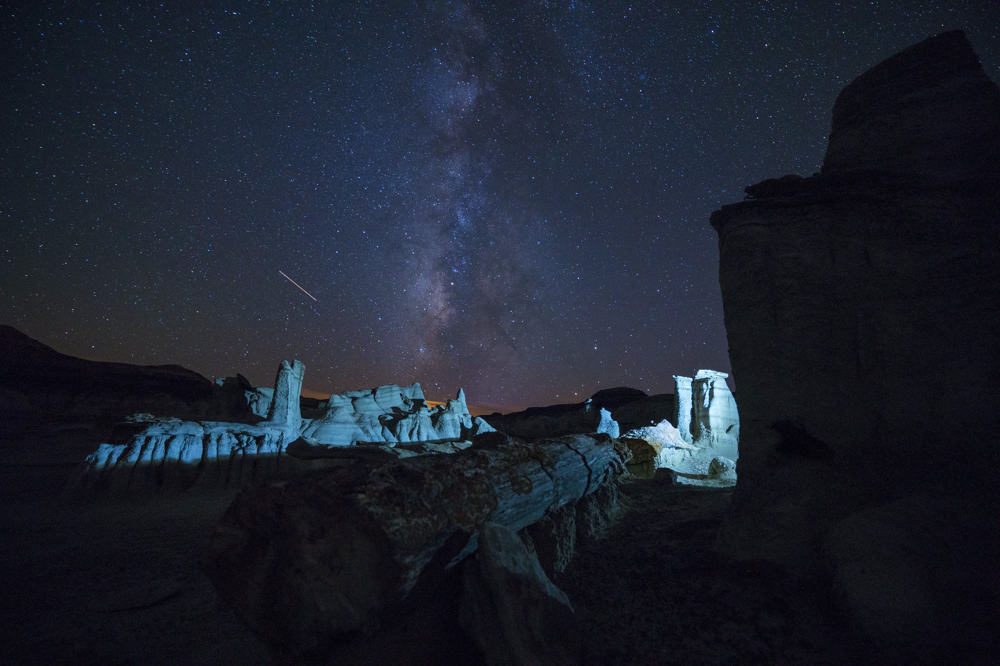
SHERMAN HOGUE / BLM NEW MEXICO
36° N / NORTHWESTERN NEW MEXICO
Come for the strange.
Stay for the stars.
Walk among stone hoodoos by daylight. Watch the sky take over after dark. Make time for both in New Mexico’s Bisti/De-Na-Zin Wilderness.
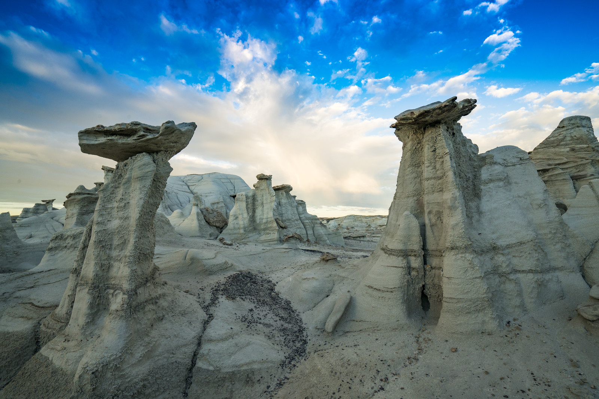
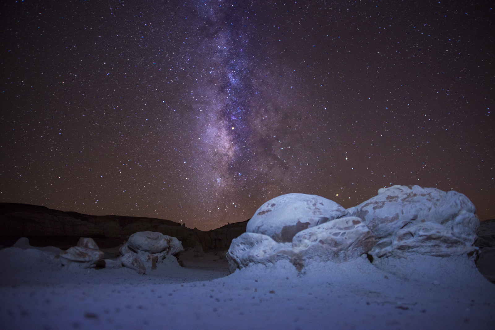

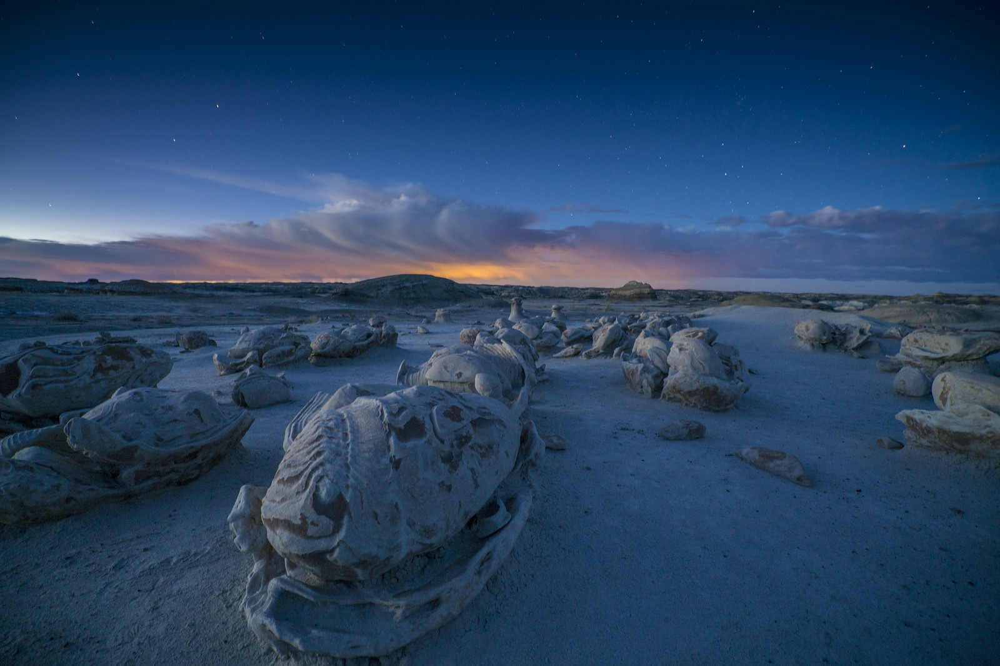
A photographic field guide
Brooke Howard / November 2026
Take a walk through the formations. Find a place to watch the light. Leave time for the sky.
AFTER DARK
When daylight leaves the badlands, there is still a reason to look up.
Stargazing, photography, and primitive camping are among the activities listed by BLM. Plan your way back before dark, bring your water, and make room for changing temperatures.
Prepare for a night outside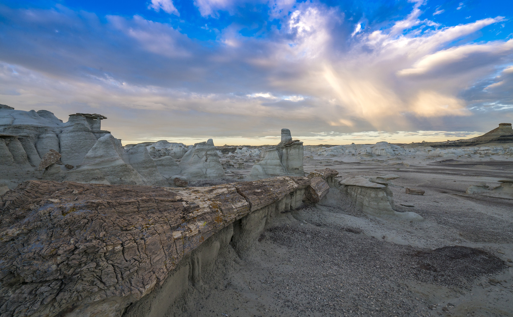
BLM New Mexico · photographs: Sherman Hogue
LAYERS AND RESISTANCE
A hard cap of sandstone can outlast the softer material beneath it. The result is a hoodoo: a column, spire, or pedestal left standing as its surroundings erode.
Bisti/De-Na-Zin’s exposed layers include sandstone, shale, mudstone, coal, and silt. From a distance, the terrain reads as a low, broken horizon. Close up, thin ledges and deeply cut surfaces reveal how unevenly the land wears away.
The fossil-bearing rock dates to the Late Cretaceous. Petrified wood and vertebrate fossils are part of the protected record, not souvenirs to take home.
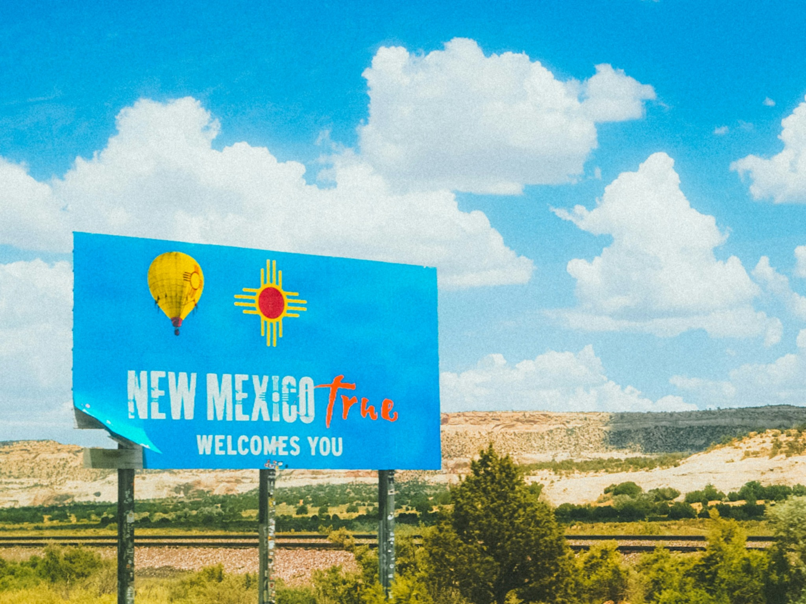
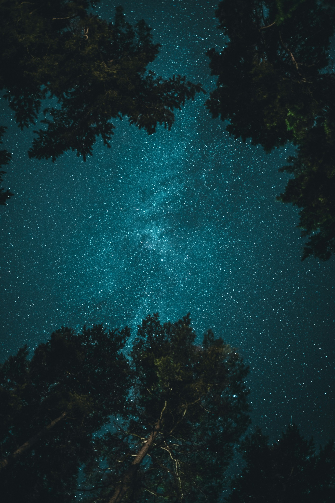
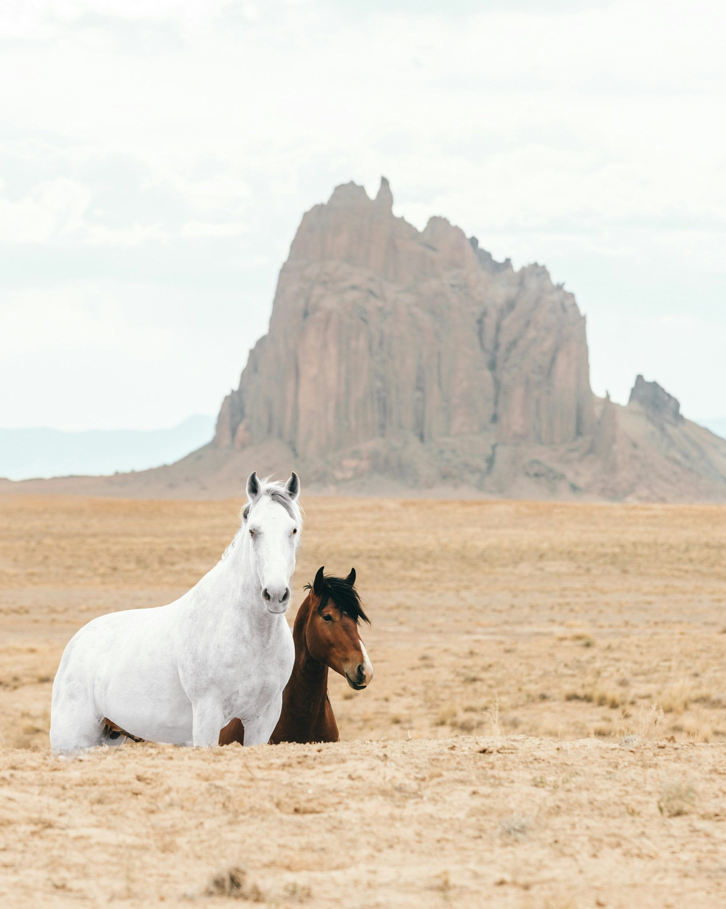
WORDS FOR THIS PLACE
BLM translates Bisti as “a large area of shale hills.” De-Na-Zin takes its name from the Navajo words for “cranes.”
The wilderness designation dates to October 30, 1984. Today the area is managed by the Bureau of Land Management’s Farmington Field Office.
The supplied 2020 formation guide records a more immediate kind of history: the loss of delicate arches and hoodoos. Its photographs document the Ostrich Hoodoo before and after collapse. These forms continue to change. Looking closely does not require standing on them.
Sources: BLM National Conservation Lands; supplied Bisti Information and Maps, updated April 2020.
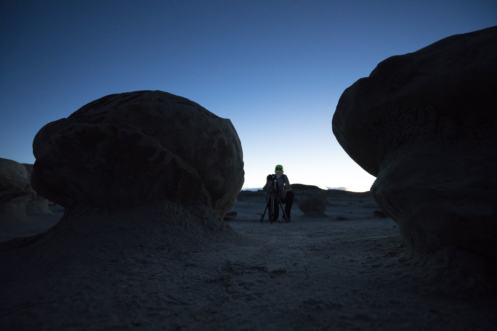
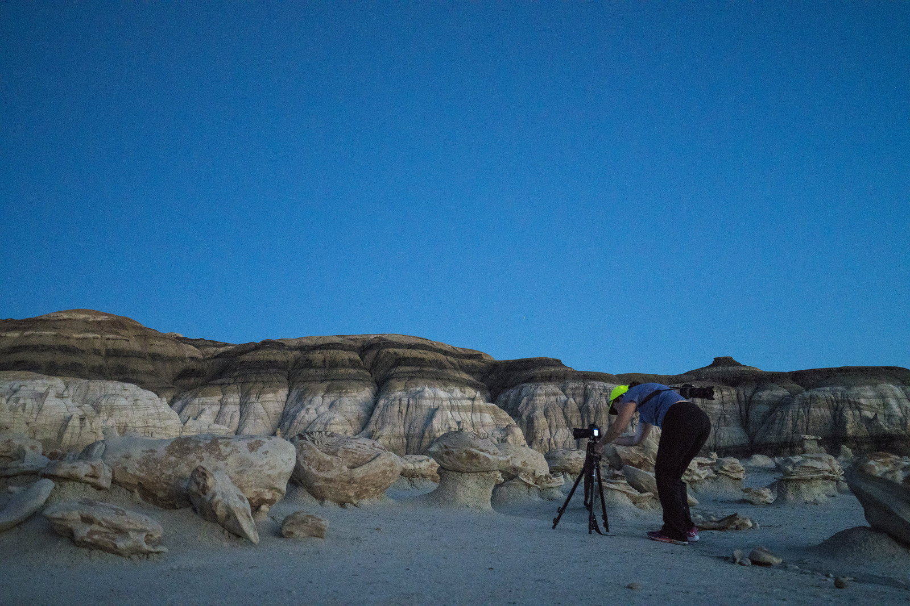
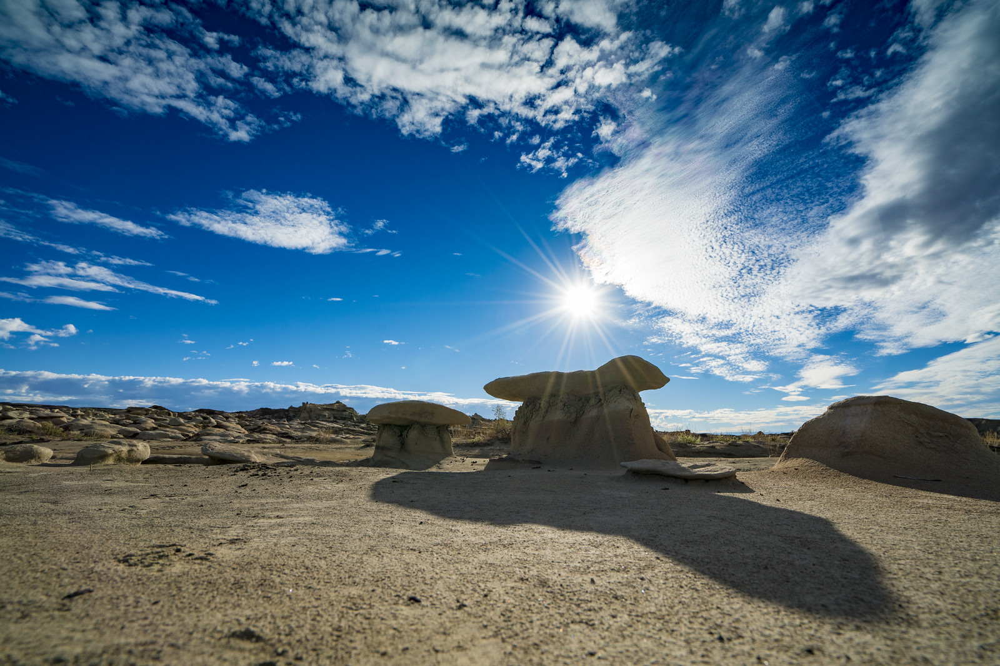
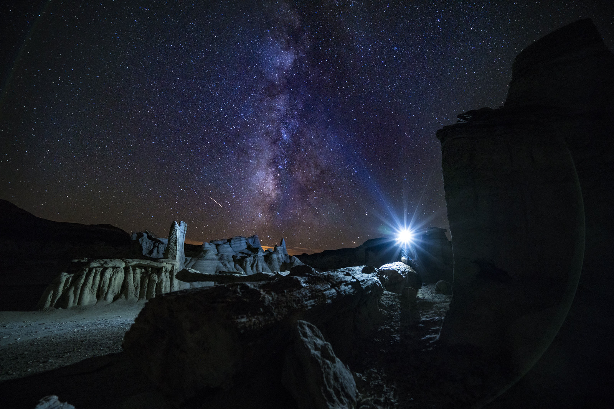
ON FOOT
A cap of stone. A narrow shadow. Another formation just beyond the first. Bring your camera, but leave room for simply looking.
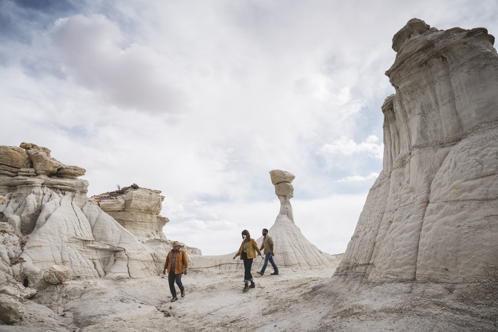
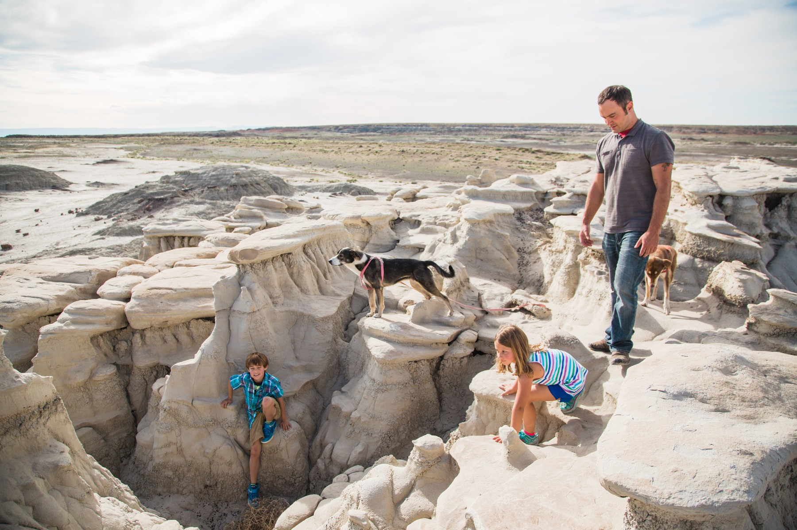
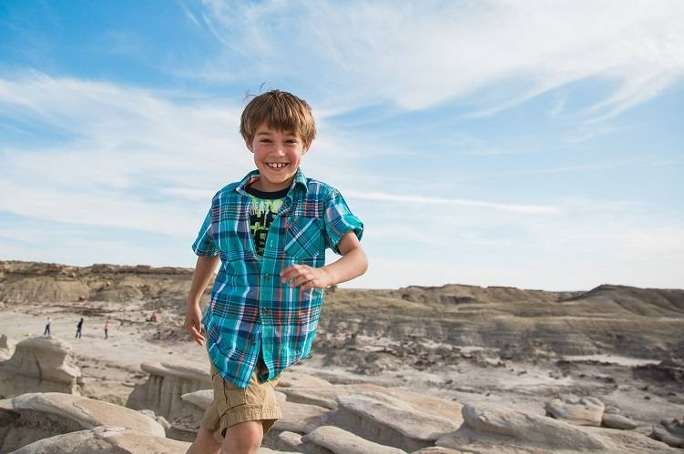
Explore informal, unmarked routes from the Bisti or De-Na-Zin trailheads. Save an offline map, record your starting point, and keep track of the way back. Cell service is minimal to nonexistent.
The supplied guide identifies the Egg Hatchery, Paint Palette Hoodoo, and The Wings. Treat its maps as dated reference material: weather, erosion, and access conditions can change.
Photography, stargazing, and primitive dispersed camping are listed BLM activities. Plan darkness, navigation, water, and changing temperatures before committing to a late return.
BEFORE THE TURNOFF
Bring your drinking water and navigation. Routes are unmarked, cell service is limited, and unpaved access roads can become impassable after rain or snow.

Bisti/De-Na-Zin lies in northwestern New Mexico’s Four Corners region. For the Bisti trailhead, BLM directs visitors south from Farmington on NM 371 for about 36 miles, then east on Road 7297 for roughly two miles, left at the T-junction, and another mile to parking.
Bisti has dirt parking, an information kiosk, a shaded group picnic area, and a vault toilet. De-Na-Zin has dirt parking but no restroom. Neither trailhead supplies potable water.
Bring all drinking water, food, sun protection, and navigation. Roads are unpaved and can become slippery or impassable after rain or snow. BLM recommends high clearance. Check conditions before leaving town.
Motorized travel, bicycles, and drones are prohibited within the wilderness. Do not disturb cultural objects or vertebrate fossils. Leave petrified wood in place and avoid climbing fragile formations.
Current facilities and access: BLM visitor information, checked November 1, 2026. This updates the 2020 guide’s statement that there are no restrooms.
FARMINGTON, THE TOWN BASE
Use Farmington as your base for the drive out and the return.
17,114 households 2020–2024
26.4% under age 18 Census QuickFacts
16.6% age 65 or older Census QuickFacts
These describe Farmington residents, not wilderness visitors. Source: U.S. Census Bureau QuickFacts, Farmington city, New Mexico.
ANOTHER DAY IN THE AREA
Trade open shale for the Animas River. In Farmington’s Animas Park, the Riverside Nature Center connects with river trails and offers a wetlands overlook for watching birds and wildlife.
Riverside Nature Center ↗Make a separate outing to Aztec Ruins National Monument in Aztec. A half-mile self-guided walk passes through an ancestral Pueblo great house and into the reconstructed Great Kiva. Stay on designated paths and leave the walls unclimbed.
Explore Aztec Ruins ↗These outings are outside Bisti/De-Na-Zin Wilderness. Sources: Visit Farmington and the National Park Service, checked November 3, 2026. Check current hours and conditions before setting out.
RESEARCH / PHOTOGRAPHY / DESIGN
YOUR NEXT NEW MEXICO TRIP
Make Farmington your starting point, then give the badlands your time. Walk among the hoodoos, watch the shadows stretch, and decide in advance whether you’ll return before dark or stay for the sky.
Start planning your visitPack food and drinking water. Download your map and check the weather and access roads. Bisti has no potable water and routes are unmarked.
Choose a walk you can comfortably retrace. Take time with the smaller formations and leave fossils and petrified wood where they lie. Keep track of your route as you go.
Know the way back before darkness. Bring a light and warm layers. Choose your return time or camping plan before heading out, and check cloud cover if stars are the reason you’re staying.
When to go: BLM recommends spring and fall for more comfortable conditions. This is a suggested visit plan, not a marked route. Check BLM’s current visitor guidance ↗
BLM: Bisti/De-Na-Zin Wilderness visitor page and National Conservation Lands profile. U.S. Census Bureau: Farmington QuickFacts. Three Rivers Brewery & Eatery and Hotel Casa Blanca: official business pages. City of Farmington: Sandstone Amphitheatre venue information. Visitor and business information checked November 1, 2026.
The supplied Bisti Information and Maps guide was updated April 2020. Its formation names, geology, and collapse photographs inform this study; older facilities and restrictions are not treated as current guidance.
Twelve photographs from the BLM New Mexico Flickr album Bisti/De-Na-Zin Wilderness – Farmington, supplied by Brooke. Album description credits Sherman Hogue. The main gallery uses a staggered composition with large, tall, and wide crops. The hero, experience links, and photographic transitions use responsive crops; other editorial photographs retain their original proportions.
Background: static night photography from the supplied BLM collection, with dark tonal overlays for reading. The opening uses Sherman Hogue’s photograph of Bisti beneath the Milky Way. No animated background is used.
Additional gallery photograph supplied by Brooke: John Fowler / Unsplash (Milky Way over hoodoos).
Regional imagery supplied by Brooke: Jeffrey Keenan, Max Saeling, and Spencer Davis / Unsplash. These images are presented as regional visual references, rather than documented Bisti locations.
Additional photographs: New Mexico Tourism Department (family, hikers, Casa Blanca); Visit Farmington (child and Three Rivers); City of Farmington (Sandstone Amphitheatre). Sources are identified for this student study.
Brooke Howard / Independent student research and editorial design study. Typography: Barlow Condensed Black and DM Sans. Travel-poster headings with an editorial reading grid. The BISTI title uses solid Barlow Condensed Black lettering, matching the bold travel-poster headings throughout the guide. The travel-presentation reference, Adobe Stock 2164584067, informed the generous photographic scale. The rhythm of wide landscape scenes and shorter visitor sections also references Darya Kondratenko’s Baikal landing-page study on Behance (2021). No template photographs or preview images are reproduced.
SHERMAN HOGUE / BLM NEW MEXICO
Photograph the details. Leave petrified wood and fossils in place, and give fragile formations room to endure.
Plan your visit